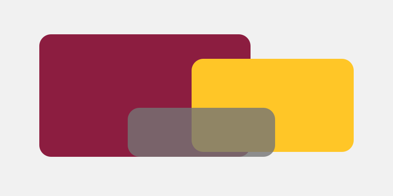

Content defaults
Observe heading and paragraph spacing.
- One list item
- Another list item

Actions and controls
Alternate theme
The same semantic tokens should produce a visibly different theme.
Tokenized actionPractice specimen
Observe heading and paragraph spacing.

The same semantic tokens should produce a visibly different theme.
Tokenized action